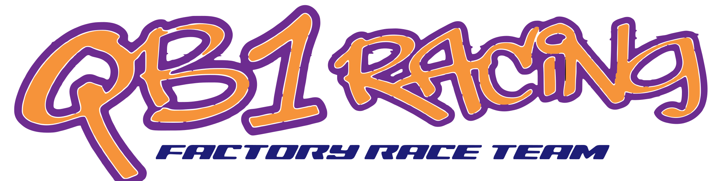
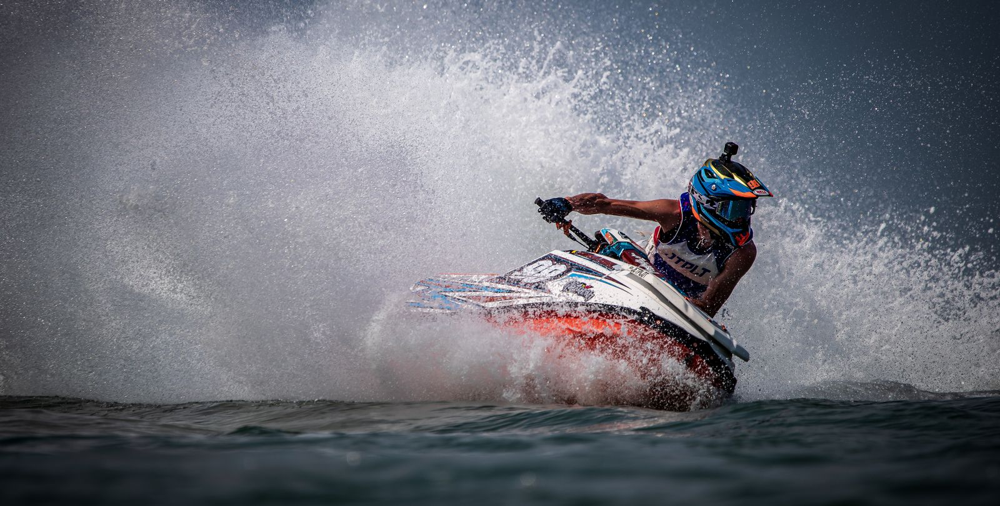
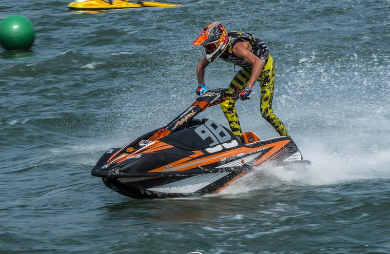
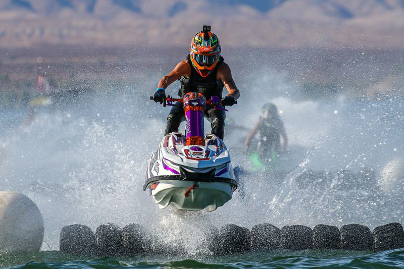

European Continental Championship
225 pts · 9/9 · Champion
-
Mira, Portugal
-
Győr, Hungary
-
Vichy, France

FACTORY SKI F16 RACER · BELGIUM
2026: 15 races, 15 wins. UIM-ABP Aquabike World Champion and UIM-ABP Aquabike European Champion, Ski Division GP1.
01 · Racing
Quinten Bossche is a factory stand-up jetski racer from Ostend, Belgium. He races the UIM-ABP Aquabike Ski Division GP1, the top stand-up class, across the European and World Championships, and the biggest international events such as the IJSBA World Finals at Lake Havasu and the yearly King's Cup in Thailand.
He won his first race at six and went on to become a multiple National, European and World Champion. The mission hasn't changed: beat the best in the world, then pass that speed on.

“I still enjoy it every day. I'm living my little boy's dream.”
A kid from the Belgian coast wins his first competition. The start of a life spent racing the best riders on the planet.

His first UIM-ABP Aquabike world title in Ski Division GP1, the top stand-up class.
A heavy crash at Lake Havasu, USA, leaves him badly injured. Months of patience and rehab with his physiotherapist follow, and one goal: a solid comeback.

The comeback lands on the same lake: four motos, four wins in Pro Ski Grand Prix at the WGP#1 World Series round in Lake Havasu.
Race report ↗A clean sweep of all three motos at the first ever Grand Prix of Vietnam sets up his second UIM-ABP world title.
“Bossche, Bossche, Bossche” ↗Fifteen motos, fifteen wins. UIM-ABP Aquabike World Champion and European Champion, Ski Division GP1.
See every moto ↓02 · Results
Fifteen motos, fifteen wins. Every point on offer: 375 of 375.
2026 was
225 pts · 9/9 · Champion
150 pts · 6/6 · Champion
Tap any moto for details.
Sources: official UIM-ABP Aquabike circuit standings, Ski Division GP1, on aquabike.net (UIM), as shared in @quintenbossche98’s Instagram story.
03 · Media
Also featured on VTM Nieuws, Belgium's prime-time evening news.
04 · Partners
The brands behind Quinten, on and off the water.

05 · Contact
Sponsorship, media, race skis or coaching: one inbox for all of it.
Put your brand on a world champion's ski, suit and channels, race after race, season after season.
From the Ostend workshop: engine tuning and modifications, power parts, handmade carbon, anodising, paint and graphics. Parts are developed and tested with partners until they are fast and reliable, for racing or recreational use.
Training for young riders chasing their own national, European and world titles, with a ski set up to win.
Workshop · Ostend, Belgium